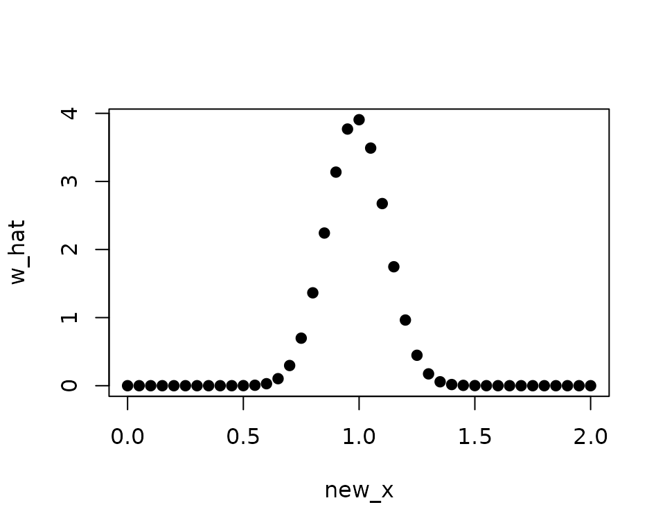
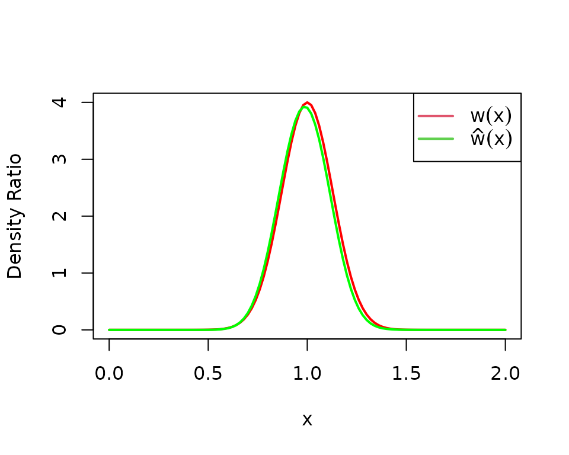
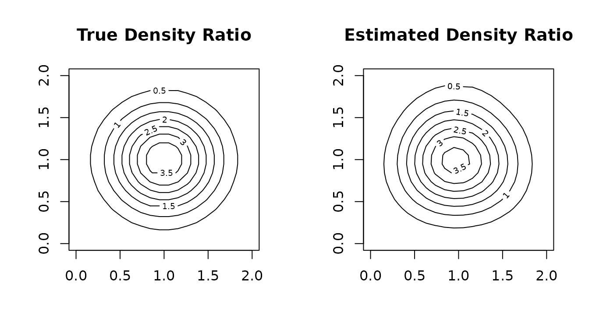

An R Package for Density Ratio Estimation
Koji MAKIYAMA (@hoxo-m)
2026-05-01
Source:vignettes/densratio.Rmd
densratio.Rmd1. Overview
Density ratio estimation is described as follows: for given two data samples and from unknown distributions and respectively, estimate
where and are -dimensional real numbers.
The estimated density ratio function can be used in many applications such as anomaly detection [Hido et al. 2011], change-point detection [Liu et al. 2013], and covariate shift adaptation [Sugiyama et al. 2007]. Other useful applications about density ratio estimation were summarized by [Sugiyama et al. 2012].
The package densratio provides a function
densratio() that returns an object with a method to
estimate density ratio as compute_density_ratio().
For example,
set.seed(3)
x1 <- rnorm(200, mean = 1, sd = 1/8)
x2 <- rnorm(200, mean = 1, sd = 1/2)
library(densratio)
densratio_obj <- densratio(x1, x2)The function densratio() estimates the density ratio of
to
,
$$
w(x) = \frac{p(x)}{q(x)} = \frac{\rm{Norm}(1, 1/8)}{\rm{Norm}(1, 1/2)}
$$ and provides a function to compute estimated density
ratio.
The densratio object has a function
compute_density_ratio() that can compute density ratio
for any
-dimensional
input
(here
).
new_x <- seq(0, 2, by = 0.05)
w_hat <- densratio_obj$compute_density_ratio(new_x)
plot(new_x, w_hat, pch=19)
In this case, the true density ratio $w(x) = p(x)/q(x) = \rm{Norm}(1, 1/8) / \rm{Norm}(1, 1/2)$ is known. So we can compare with the estimated density ratio .
true_density_ratio <- function(x) dnorm(x, 1, 1/8) / dnorm(x, 1, 1/2)
plot(true_density_ratio, xlim=c(0, 2), lwd=2, col="red", xlab = "x", ylab = "Density Ratio")
plot(densratio_obj$compute_density_ratio, xlim=c(0, 2), lwd=2, col="green", add=TRUE)
legend("topright", legend=c(expression(w(x)), expression(hat(w)(x))), col=2:3, lty=1, lwd=2, pch=NA)
2. How to Install
You can install the densratio package from CRAN.
install.packages("densratio")You can also install the package from GitHub.
install.packages("remotes") # If you have not installed "remotes" package
remotes::install_github("hoxo-m/densratio")The source code for densratio package is available on GitHub at
3. Details
3.1. Basics
The package provides densratio(). The function returns
an object that has a function to compute estimated density ratio.
For data samples x1 and x2,
library(densratio)
x1 <- rnorm(200, mean = 1, sd = 1/8)
x2 <- rnorm(200, mean = 1, sd = 1/2)
result <- densratio(x1, x2)In this case, densratio_obj$compute_density_ratio() can
compute estimated density ratio.
new_x <- seq(0, 2, by = 0.05)
w_hat <- densratio_obj$compute_density_ratio(new_x)
plot(new_x, w_hat, pch=19)
3.2. Methods
densratio() has method argument that you
can pass "uLSIF", "RuSLIF", or
"KLIEP".
- uLSIF (unconstrained Least-Squares Importance Fitting) is the default method. This algorithm estimates density ratio by minimizing the squared loss. You can find more information in [Kanamori et al. 2009] and [Hido et al. 2011].
- RuLSIF (Relative unconstrained Least-Squares Importance Fitting). This algorithm estimates relative density ratio by minimizing the squared loss. You can find more information in [Yamada et al. 2011] and [Liu et al. 2013].
- KLIEP (Kullback-Leibler Importance Estimation Procedure). This algorithm estimates density ratio by minimizing Kullback-Leibler divergence. You can find more information in [Sugiyama et al. 2007].
The methods assume that density ratio are represented by linear model:
where
is the Gaussian (RBF) kernel.
densratio() performs the following:
- Decides kernel parameter by cross-validation,
- Optimizes the kernel weights (in other words, find the optimal coefficients of the linear model), and
- The parameters
and
are saved into
densratioobject, and are used when to compute density ratio in the callcompute_density_ratio().
3.3. Result and Arguments
You can display information of densratio objects. Moreover, you can
change some conditions to specify arguments of
densratio().
densratio_obj##
## Call:
## densratio(x1 = x1, x2 = x2, method = "uLSIF")
##
## Kernel Information:
## Kernel type: Gaussian
## Number of kernels: 100
## Bandwidth (sigma): 0.1
## Centers: num [1:100, 1] 0.907 1.093 1.18 1.136 1.046 ...
##
## Kernel Weights:
## num [1:100] 0.067455 0.040045 0.000459 0.016849 0.067084 ...
##
## Regularization Parameter (lambda): 1
##
## Function to Estimate Density Ratio:
## compute_density_ratio()- Kernel type is fixed as Gaussian.
-
Number of kernels is the number of kernels in the
linear model. You can change by setting
kernel_numargument. In default,kernel_num = 100. -
Bandwidth (sigma) is the Gaussian kernel bandwidth.
In default,
sigma = "auto", the algorithm automatically select an optimal value by cross validation. If you setsigmaa number, that will be used. If you setsigmaa numeric vector, the algorithm select an optimal value in them by cross validation. -
Centers are centers of Gaussian kernels in the
linear model. These are selected at random from the data sample
x1underlying a numerator distribution . You can find the whole values inresult$kernel_info$centers. -
Kernel Weights are
thetaparameters in the linear kernel model. You can find these values inresult$kernel_weights. -
Function to Estimate Density Ratio is named
compute_density_ratio().
4. Multi Dimensional Data Samples
So far, the input data samples x1 and x2
were one dimensional. densratio() allows to input
multidimensional data samples as matrix, as long as their
dimensions are the same.
For example,
library(densratio)
library(mvtnorm)
set.seed(3)
x1 <- rmvnorm(300, mean = c(1, 1), sigma = diag(1/8, 2))
x2 <- rmvnorm(300, mean = c(1, 1), sigma = diag(1/2, 2))
densratio_obj_d2 <- densratio(x1, x2)
densratio_obj_d2##
## Call:
## densratio(x1 = x1, x2 = x2, method = "uLSIF")
##
## Kernel Information:
## Kernel type: Gaussian
## Number of kernels: 100
## Bandwidth (sigma): 0.316
## Centers: num [1:100, 1:2] 1.257 0.758 1.122 1.3 1.386 ...
##
## Kernel Weights:
## num [1:100] 0.0756 0.0986 0.059 0.0797 0.0421 ...
##
## Regularization Parameter (lambda): 0.3162278
##
## Function to Estimate Density Ratio:
## compute_density_ratio()In this case, as well, we can compare the true density ratio with the estimated density ratio.
true_density_ratio <- function(x) {
dmvnorm(x, mean = c(1, 1), sigma = diag(1/8, 2)) /
dmvnorm(x, mean = c(1, 1), sigma = diag(1/2, 2))
}
N <- 20
range <- seq(0, 2, length.out = N)
input <- expand.grid(range, range)
w_true <- matrix(true_density_ratio(input), nrow = N)
w_hat <- matrix(densratio_obj_d2$compute_density_ratio(input), nrow = N)
par(mfrow = c(1, 2))
contour(range, range, w_true, main = "True Density Ratio")
contour(range, range, w_hat, main = "Estimated Density Ratio")
5. Related work
- A Python Package for Density Ratio Estimation
- APPEstimation: Adjusted Prediction Model Performance Estimation
References
- Hido, S., Y. Tsuboi, H. Kashima, M. Sugiyama, and T. Kanamori. Statistical outlier detection using direct density ratio estimation. Knowledge and Information Systems, 2011.
- Kanamori, T., S. Hido, and M. Sugiyama. A least-squares approach to direct importance estimation. Journal of Machine Learning Research, 2009.
- Liu, S., M. Yamada, N. Collier, M. Sugiyama. Change-point detection in time-series data by relative density-ratio estimation. Neural Net, 2013
- Sugiyama, M., S. Nakajima, H. Kashima, P. von Bünau, and M. Kawanabe. Direct importance estimation with model selection and its application to covariate shift adaptation. NIPS 2007.
- Sugiyama, M., T. Suzuki, and T. Kanamori. Density ratio estimation in machine learning. Cambridge University Press, 2012.
- Yamada, M., T. Suzuki, T. Kanamori, H. Hachiya, and M. Sugiyama. Relative density-ratio estimation for robust distribution comparison. NIPS 2011.